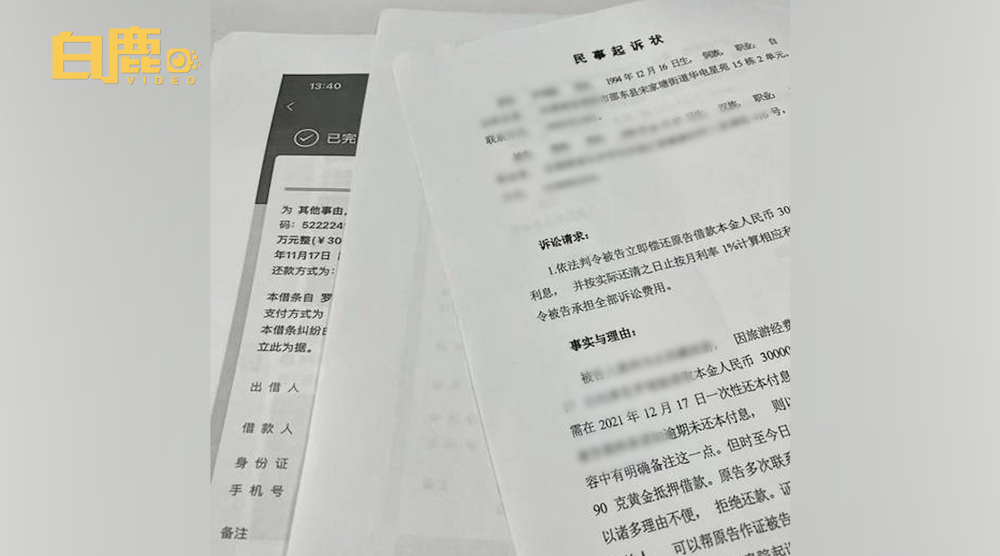

不要让同事知道你有百万存款。@网易财经:【#男子得知同事有百万存款借23万后失联# 曾拍视频承诺还钱】4月7日，湖南邵东。仅入职半个月的同事裴某，听说罗先生有百万存款，就以承接工程为由分三次借款23.5万元。到了还款日期，裴某却迟迟没有还钱。罗先生多方打听得知，原来裴某用13万投资赌场，另外10万全挥霍掉了。罗先生称，当时裴某身着名牌，又提供了各种还款能力证明，他就在高利息的诱惑下借了钱。没想到裴某说可以用来抵债的房子是父母的，他本人没有任何还款能力，而且已经失联十多天了。目前，罗先生已向法院提起诉讼。白鹿视频的微博视频 56万次播放 01:09